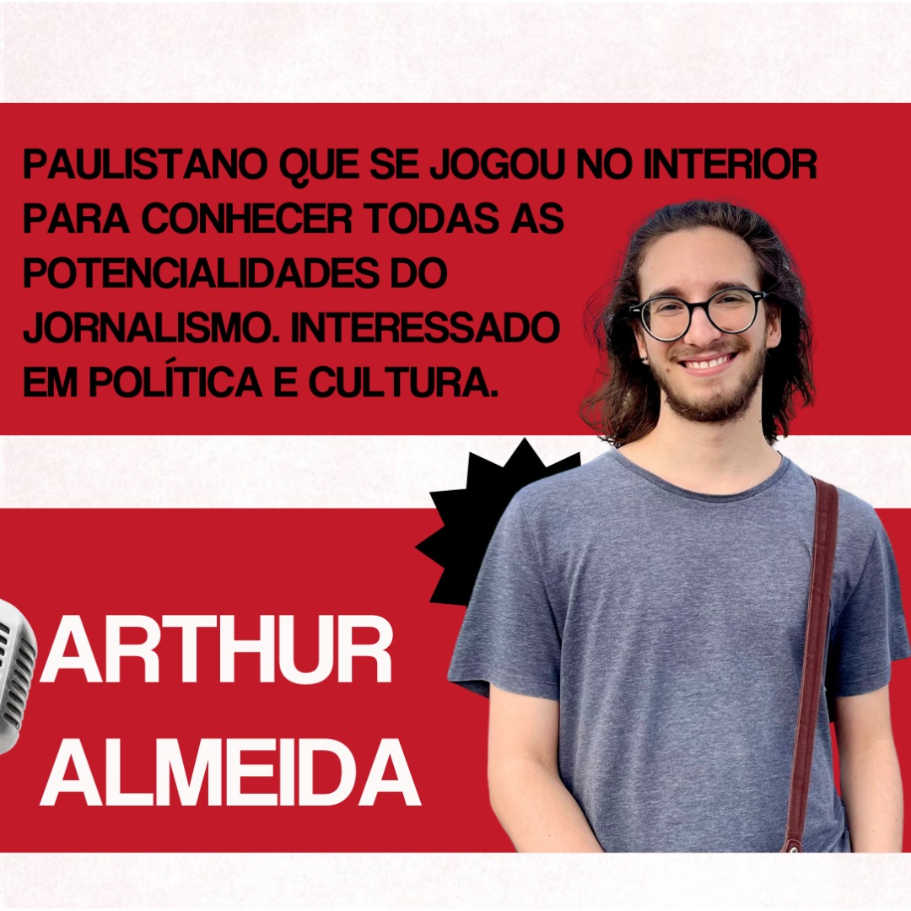

Sobre nós
Arthur Almeida
Um paulistano que se jogou no interior do estado para conhecer todas as potencialidades do jornalismo. Interessado em temas políticos, sociais e culturais.
Eduarda Albrechete Motta
Encontrou no jornalismo uma forma de unir duas paixões: comunicação e sociedade.

Geovanna Sena Vale
Encontrou no jornalismo narrativas tão apaixonantes quanto as dos livros que tanto ama.
Julia Faria Peixoto
Acredita na capacidade transformadora do jornalismo como meio de lutar contra os problemas sociais.
Leonardo Scramin Florindo
Apaixonado em conhecer, viver e contar novas histórias a partir do jornalismo.
Contato: lucronotabu@gmail.com